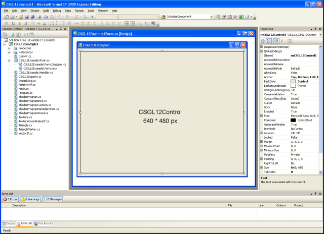
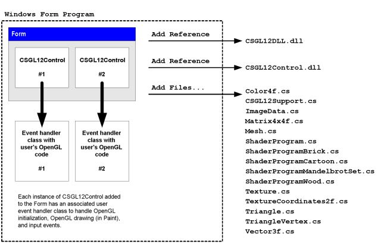

C# OpenGL interfejsu
Windows dla systemu operacyjnego
Colin Fahey

CSGL12Control na Form, wykazując "Fractal" Pixel Shader program i GDI+ rysunek skopiowany do tekstur

Dwa CSGL12Control przypadkach na Form, pokazano Pixel Shader programy i tekstur

A 3D avatar że roams pulpicie można przemieszczać kursor
1. Oprogramowanie
Ta wersja tego dokumentu powinna być dołączona do oprogramowania "CSGL12". Jeśli nie możesz znaleźć programu, a następnie przejdź do następującej witryny sieci Web, aby pobrać oprogramowanie:
http://colinfahey.com.
2. Wszystkie z C# kod komputerowy w C# OpenGL interfejsu (CSGL12) znajduje się w "domenie publicznej"
Napisałem wszystkie z C# kod komputerowy w C# OpenGL interfejsu (CSGL12).
Oświadczam, wszystkie z C# kod komputerowy w C# OpenGL interfejsu (CSGL12) jest w "domenie publicznej."
Dlatego komputer kod może być użyty w dowolnym celu (komercyjnych lub prywatnych), bez zapłaty, bez ograniczeń, bez zobowiązań, bez uznania oryginalnego autora.
Kod może być zmieniony lub ponownego wykorzystania części, bez ograniczeń i bez zobowiązań, bez uznania oryginalnego autora.
Na przykład programy zawierają małą ilość kodu komputerowego (szczególnie, "shader kod komputerowy) napisane przez innych ludzi." Taki kod nie jest w interfejs się i może być trivially usunięte. Taki kod jest jedynie do wykazania prostota użycia interfejs do tworzenia i wykorzystania "shader" programów.
3. Wstęp
"CSGL12" jest zbiorem C# komputer kod pliki, które implementuje interfejs do biblioteki OpenGL grafiki (w tym wszystkie rozszerzenia OpenGL do roku 2007) dla Windows systemu operacyjnego.
W C# kodów komputerowych plików w "CSGL12" zbierania ułatwiają OpenGL rysunek, aby dodać do każdego C# / .NET oprogramowania z "Form" (instancji "System.Windows.Forms.Form").
W "CSGL12" zbiór kodów komputerowych plików zawiera plik o nazwie "CSGL12Control.cs", która określa klasę o nazwie "CSGL12Control", pochodzące z "System.Windows.Forms.Control". Każdy przypadek "CSGL12Control" stanowi niezależny OpenGL rysunku obszarze. Jest bardzo łatwo dodać wiele wystąpień CSGL12Control do Form (instancji System.Windows.Forms.Form).
4. Charakterystyki i wymagania "CSGL12"
Kod jest tylko dla Windows systemów operacyjnych, które wspierają .NET 2.0 Framework (Windows 2000, Windows XP, Windows Vista, Windows 7)
Kod może zostać opracowane przy użyciu "Microsoft Visual C# 2008 Express Edition" (wolny kompilator), lub podobne C# kompilatory.
Kod wymaga powstaje z zaznaczoną opcją "[X] Allow unsafe code" budować tak, aby obraz zoptymalizowane funkcje kopiowania danych mogą być użyte. Jeśli jesteś ekspertem C# programista będzie można łatwo zidentyfikować części z C# kod, który wymaga "unsafe" opcji i wyłączyć je w razie potrzeby lub wymagane. Image kopiowania danych jest 10 razy szybsze niż przy użyciu kodu "unsafe" alternatywnych, i dlatego takie kod jest używany. Jeśli budować DLL że zawiera wszystkie z "unsafe" kod, a następnie projekt, który korzysta z tego DLL nie wymaga powstaje z "unsafe" opcji, a więc można wywnioskować, że brak jest możliwości "unsafe" w projekcie nie oznacza dodatkowe bezpieczeństwa (bo liczne DLL plików, które są stosowane pośrednio lub bezpośrednio przez program zawierać "niebezpieczny" kod).
Kod może być zestawiane i wykorzystywane przez któregokolwiek z następujących czynności:
Microsoft Visual C# 2008 Express Edition
Microsoft Visual Studio 2008
Microsoft .NET 3.5 SDK
SharpDevelop
Mono Project
Kod oferuje najbardziej OpenGL rozszerzeń (poprzez 2007 roku), w tym "vertex shaders" i "pixel shaders".
Kod 1570 zapewnia funkcje związane z OpenGL:
336 GL functions
51 GLU functions
19 WGL functions
1164 extensions
Kod oferuje kilka alternatywnych wariantów w 1570 funkcje w różnych parametrów typów, dla wygody.
Kod określa więcej niż 3244 na stałe OpenGL.
Kod umożliwia wielu kontekstach OpenGL rysunek, wszystkie animating niezależnie na każdym "Form".
Kliknięcie na "CSGL12Control" daje mu "wejście skoncentrować," pozwalając kolejnych klawiatury i myszki koło wejścia. Kursor kliknięć i ruchów są odbierane, kiedy kursor znajduje się prostokątny obszar instancji "CSGL12Control".
Kod obejmują funkcje wykazać, w jaki sposób wykonać pewne wspólne zadania OpenGL w C# i .NET.
Kod listy wszystkich OpenGL stałych i funkcji w kolejności alfabetycznej w "class GL" w "GL.cs" łatwo ustalić, czy jakiegokolwiek stałego lub funkcji brakuje (co jest mało prawdopodobne, z wyjątkiem rozszerzeń przyjęte po roku 2007).
Na przykład programy pokazują, jak to zrobić GDI+ rysunku do Bitmap, a następnie, jak kopią Bitmap do OpenGL tekstur.
Dzięki temu tekst i innych zdolności do rysowania GDI+ się do OpenGL sceny.
W GDI+ Bitmap może być aktualizowany i przesłany do OpenGL tekstury tak często, jak raz na OpenGL ramki.
Na przykład programy pokazują, jak wybrać spośród kilku różnych "pixel shader programs" gdy program jest uruchomiony.
Na przykład programy pokazują, jak napisać OpenGL buforów do plików graficznych (JPG, BMP, GIF, PNG).
Prasa Shift + 0 (Shift-zero) do napisania OpenGL bufor plików graficznych.
Przykład kodu pokazuje, w jaki sposób kompilować "GL.cs" się w DLL plik, a następnie dodając, że DLL plik do innego projektu, może zapobiec Microsoft kod redaktorów (np. Microsoft Visual C# 2008 Express Edition, itp) z "IntelliSense" (kontekście wrażliwych kod zakończenia) z coraz częściej i uporczywie odpowiadać (wielokrotnie zatrzymując dla wielu sekund, redaktora całkowicie bezużyteczny). Po plik "GL.cs" bezpośrednio włączone w każdy projekt jest edytowana przez Microsoft edytorze kodu nie jest możliwe, chyba że dana osoba jest skłonna znieść na powolność edytora. Ten problem dotknął Microsoft Visual Studio 2003, 2005, 2008 i prawdopodobnie wpływa na 2010 wersji, too.
Na przykład kod demonstruje wykorzystanie wielu wystąpień "CSGL12Control" na "Form".
Przykład kodu zawiera kod aby 3D "avatar" że roams pulpit Windows.
5. Przykład programu dołączonego do "CSGL12"
5.1 "CSGL12DLL"
Projekt o nazwie "CSGL12DLL" tworzy DLL plik o nazwie "CSGL12DLL.dll" który zawiera "class GL" (określone w C# pliku "GL.cs").
Umieszczenie w "class GL" do DLL plik, a następnie przy użyciu tego DLL w innych projektach, które używają "class GL", pomaga uniknąć skrajnych problemu ze wszystkimi Microsoft kod redaktorów z IntelliSense funkcji. Korzystanie z C# pliku GL.cs bezpośrednio w projekcie spowodowałoby żadnych Microsoft edytor kodu z funkcji IntelliSense się zupełnie bezużyteczny i odpowiadać niemal nieprzerwanie, ze względu na nieefektywność w IntelliSense funkcji (oraz fakt, że IntelliSense ewidentnie bloków programu głównego wątku wydawcy ).
Jeśli używasz C# edytorze kodu, który nie jest produkowany przez Microsoft (np. "SharpDevelop", "MonoDevelop", itp), wtedy możesz po prostu to plik "GL.cs" bezpośrednio w projektach, a to jest mało prawdopodobne, aby uzyskać jakiekolwiek korzyści z wykorzystaniem "CSGL12DLL.dll".
5.2 "CSGL12Control"
Projekt o nazwie "CSGL12Control" tworzy DLL plik o nazwie "CSGL12Control.dll" który zawiera "class CSGL12Control" (określone w C# pliku "CSGL12Control.cs").
Umieszczenie w "class CSGL12Control" do DLL pliku, pozwala, że "Control" (tj. klasy pochodzą z "System.Windows.Forms.Control"), który ma zostać dodany do "Toolbox" z Microsoft Visual C# 2008 Express Edition (i podobne C# edytorach). Po "CSGL12Control" w "Toolbox" ułatwia osobie dodać instancji "CSGL12Control" do "Form" w "Designer" (np. osoby mogą po prostu użyć kursora, aby wybrać i przeciągnąć instancji "CSGL12Control" z "Toolbox" do "Form").
W "CSGL12Control" obiektu zarządza jeden OpenGL rysunek kontekście. Wiele wystąpień "CSGL12Control" mogą współistnieć na "Form".
5.3 "CSGL12Example1"
Projekt o nazwie "CSGL12Example1" tworzy wykonywalny plik programu (EXE) o nazwie "CSGL12Example1.exe". Program korzysta "CSGL12DLL.dll" i "CSGL12Control.dll" aby wyświetlić instancji CSGL12Control i narysować sześcian OpenGL użyciu.
Program pokazuje wykorzystanie czterech różnych "pixel shaders" "(Fractal, cegły, drewno" i "animowanych)."
Program pokazuje również wykorzystanie "GDI+", a .NET rysunek biblioteki, wyciągnąć tekst i inne kształty na "Bitmap" obiektu (a "GDI+" obiektu), a następnie skopiować dane obrazu z tego "Bitmap" do "texture" w OpenGL, dzięki czemu obraz wyciągnąć przez "GDI+" do stawienia się w OpenGL rysunku. Ta umiejętność jest bardzo przydatna, ponieważ OpenGL brakuje wielu z 2D rysowania funkcji w "GDI+" i podobne 2D rysunek libaries.
5.4 "CSGL12Example2"
Projekt o nazwie "CSGL12Example2" tworzy wykonywalny plik programu (EXE) o nazwie "CSGL12Example2.exe". Program korzysta "CSGL12DLL.dll" i "CSGL12Control.dll" aby wyświetlić dwa wystąpienia CSGL12Control, z których każdy zwraca sześcianu używając OpenGL.
Program posiada "SplitContainer" "Control" na "Form". Każda z dwóch części "SplitContainer" zawiera instancji CSGL12Control. Zatem osoba, może dostosować pozycję podzielonej pomiędzy dwa wystąpienia CSGL12Control. To pokazuje elastyczność w CSGL12Control.
Jednym z przypadków CSGL12Control wysyła wydarzeń zestaw obsługi zdarzeń w instancji "CSGL12Example2Handler1.cs", który korzysta z tego samego kodu, co "CSGL12Example1Handler.cs" w "CSGL12Example1" przykład projektu. Dlatego też jednym z przypadków CSGL12Control zwraca sześcianu z jednej wybranej "pixel shader" spośród czterech dostępnych "pixel shaders".
W drugiej instancji CSGL12Control wydarzenia wysyła do zestawu obsługi zdarzeń w instancji "CSGL12Example2Handler2.cs", która zwraca sześcianu używając tekstur obrazu (lub "checkerboard" wzór, jeśli plik obrazu o nazwie "image.jpg" nie znaleziono).
5.5 "CSGL12Avatar"
Projekt o nazwie "CSGL12Avatar" tworzy wykonywalny plik programu (EXE) o nazwie "CSGL12Avatar.exe". Program korzysta "CSGL12DLL.dll" i "CSGL12Control.dll" aby narysować sześcian użyciu OpenGL na "Form" bez granic, w oparciu o kolor przejrzystości aktywne, aby narysować 3D "avatar" że roams na pulpicie Windows obszarze.
Ruchome avatar można kliknięte i przeciągnięty do nowej lokalizacji za pomocą kursora. Dwukrotne kliknięcie avatar uczyni to znika. Chociaż kod jedynie zwraca sześcianu, OpenGL mogą być używane do ciągnięcia innych rzeczy.
Wiele wystąpień "avatar" program może zostać uruchomiony. Tak, wielu niezależnych "avatar" przypadkach mogą jednocześnie wędrować Windows na pulpicie. To jest zabawne. Ekspert C# programista może cieszyć znalezienia sposobów koordynowania działalności "avatar" wielu takich przypadkach.
Niestety, tempo, w jakim obiekt Window z przejrzystość jest aktualizowana na ekranie jest dużo wolniejszy niż tempo, w jakim OpenGL można wyciągnąć. "Avatar" aktualizacje tylko 10 razy na sekundę. Nie wiem, czy można to poprawić.
5.6 "CSGL12BuiltExecutableExamplesForReference"
W katalogu "CSGL12BuiltExecutableExamplesForReference" zawiera DLL pliki i EXE pliki wyprodukowane przez wszystkich przykładzie projektów. Pliki te są przewidziane jako punkt odniesienia, tak aby pliki mogą być badane natychmiast, nawet jeśli dana osoba nie ma zdolności do kompilacji różnych projektów z przewidzianych C# kodu.
5.7 "CSGL12UsefulCode"
W katalogu "CSGL12UsefulCode" zawiera C# plików, które mogą być użyteczne dla ludzi, którzy chcą zrobić pospolite rysunek operacji z OpenGL. Katalog zawiera także DLL plików "CSGL12DLL.dll" i "CSGL12Control.dll" dla wygody.
Kod w tym katalogu określa class różnych typów, takich jak Color4f, Vector3f, Matrix4x4f, Triangle, Mesh, ImageData, Texture, ShaderProgram, itp. Kod ten jest dość skuteczny, ale kod jest przeznaczona tylko do inspirowania ludzi do rozwijania własnej implementacji.
6. CSGL12 plików
W "CSGL12" zbierania C# kodów komputerowych plików zawiera plików pokazane w poniższej wykres:

W "CSGL12" zbierania C# kodów komputerowych plików zawiera pliki widoczne w tym diagramie.
W "CSGL12" oprogramowania obejmuje również projekty w celu utworzenia dwóch DLL plików ("CSGL12DLL.dll" i "CSGL12Control.dll") pokazano na rysunku. Te dwa DLL plików mogą być tworzone w celu uczynienia go bardziej wygodne do tworzenia programów, które używają OpenGL, ale możliwe jest również tworzenie programów z wykorzystaniem wyłącznie C# plików bezpośrednio.
7. "namespace CSGL12" i "class" typy
W "CSGL12" zbierania C# kodów komputerowych plików "namespace CSGL12" określa rodzaje i "class" pokazano w następującym diagramie:

W "CSGL12" zbierania C# kodów komputerowych plików określa "namespace CSGL12" i "class" typy pokazane w tym diagramie.
A program, który nie OpenGL rysowania mogą być tworzone przy użyciu tylko "class GL" (za pomocą C# pliku GL.cs, bezpośrednio lub za pomocą DLL pliku CSGL12DLL.dll zawierający również "class GL"). Jednakże, używając "class CSGL12Control" (przy użyciu C# pliku CSGL12Control.cs, bezpośrednio lub za pomocą DLL pliku CSGL12Control.dll zawierający również "class CSGL12Control") sprawia, że dodawanie OpenGL rysunek do Form (System.Windows.Forms.Form) łatwe i wygodne.
W C# klas Color4f, CSGL12Support, ImageData, ..., w dolnej części diagramu są oferowane tylko dla wygody. Te zajęcia ułatwiają tworzenie programów z wykorzystaniem OpenGL remis. Jednakże, możesz już klas, które wykonują operacje w tych klasach, lub możesz wybrać do stworzenia podobnych klas, które wykonują operacje inaczej lub bardziej skutecznie. Klasy te są oferowane jako przykłady kodu danego projektu i wykonania.
8. Używanie jednego "CSGL12Control" na System.Windows.Forms.Form
8.1 Struktura programu
Poniższy wykres pokazuje jak program z System.Windows.Forms.Form można użyć jednego "CSGL12Control" do rysowania z OpenGL. Wykres pokazuje różne CSGL12 pliki wykorzystywane do budowania programu.

Program za pomocą jednego "CSGL12Control" na System.Windows.Forms.Form
8.2 Korzystanie Microsoft Visual C# do tworzenia programu
(1) Start Microsoft Visual C#.
(2) W menu, wybierz "File" -> "New Project...".
(3) W "New Project" wyświetlonym oknie dialogowym wybierz "Windows Forms Application" i wybrać nazwę dla programu, a następnie naciśnij "OK".
(4) Niezwłocznie zapisz "Solution" wybierając "File" -> "Save All". Zostanie wyświetlone okno dialogowe z tytułem "Save Project" będą wyświetlane, pozwala ustawić nazwę projektu, lokalizację katalogu, a "rozwiązanie" dla nazwy projektu. Zapamiętaj lokalizację katalogu tak, że jesteś gotowy do następnej instrukcji. Naciśnij przycisk, aby zapisać "Save" projektu.
(5) Skopiuj wszystkie pliki z katalogu "CSGL12UsefulCode" w "CSGL12" oprogramowania do katalogu zawierającego kod źródłowy plików do nowego projektu (np. katalog zawierający pliki "Form1.cs", "Form1.Designer.cs", "Program.cs", itp), w taki sposób, że pliki "CSGL12DLL.dll", "CSGL12Control.dll", "Color4f.cs" , "CSGL12Support.cs", itp, to wraz z nowym projektem plików "Form1.cs", itp.
(6) W Microsoft Visual C# dodać "CSGL12" C# plików do projektu. W menu, wybierz "Project" -> "Add Existing Item...", aw "Add Existing Item" oknie dialogowym wybierz wszystkie z C# pliki z CSGL12 oprogramowania ("Color4f.cs", "CSGL12Support.cs", "ImageData.cs", ...).
(7) W Microsoft Visual C# dodać "odniesienia" do DLL plików "CSGL12DLL.dll" i "CSGL12Control.dll". W menu, wybierz "Project" -> "Add Reference...", aw "Add Reference" oknie dialogowym wybierz kartę "Browse" i wybierz pliki "CSGL12DLL.dll" i "CSGL12Control.dll" z projektu plik źródłowy katalog, a następnie naciśnij "OK".
(8) W Microsoft Visual C# dodać "CSGL12Control" do "Toolbox". W menu, wybierz "Tools" -> "Choose Toolbox Items...". W "Choose Toolbox Items" oknie dialogowym, które się pojawi, naciśnij przycisk "Browse...", i przejść do katalogu z projektem kod źródłowy plików, a następnie wybierz "CSGL12Control.dll". Naciśnij przycisk "OK".
(9) W Microsoft Visual C# zobaczyć "Toolbox". W menu, wybierz "View" -> "Toolbox". W "Toolbox", przejdź do sekcji o nazwie "General" i znajdź element o nazwie "CSGL12Control". Korzystanie z kursorem, kliknij pozycję o nazwie "CSGL12Control" i przeciągnij go do "Form" w "Design" widzenia.
(10) W Microsoft Visual C# w "Form" "Design" zdaniem przenieść "CSGL12Control" na przykład "Form" i dostosowanie jej szerokość i wysokość. W "Properties" panelu ustawić "Anchor" wartości obejmują "Top, Bottom, Left, Right", jeśli chcesz, aby zmienić rozmiar kontroli zgodnie ze zmianami w programie rozmiar okna.
(11) W Microsoft Visual C#, projekt zmian właściwości, tak aby mógł on korzystać "unsafe" kodu. W menu, wybierz "Project" -> "[project] Properties...". Wybierz wyświetlonym oknie dialogowym wybierz zakładkę o nazwie "Build", i zaznacz pole wyboru o nazwie "[X] Allow unsafe code". Zamknij okno dialogowe Właściwości projektu.
(12) W Microsoft Visual C#, dodać nowy plik C# do projektu. W menu, wybierz "Project" -> "Add New Item...". W oknie dialogowym nazwie "Add New Item", wybrać szablon o nazwie "Class" i wybrać nazwę dla nowej klasy typu, takich jak "CSGL12MyHandler.cs", a następnie naciśnij przycisk "Add". Spójrz na przykład projekt o nazwie "CSGL12Example1", w pliku o nazwie "CSGL12Example1Handler.cs", jako przykład, jak kod "CSGL12MyHandler.cs" powinien być napisany.
(13) W Microsoft Visual C# w "Solution Explorer", kliknij na "Form1". W menu, wybierz "View" -> "Code" (lub naciśnij F7 lub kliknij prawym przyciskiem myszy i wybrać "Form1" na "View Code". Kod w pliku "Form1.cs" pojawi się w edytorze. Zmodyfikuj kod w pliku "Form1.cs" jest podobny do kodu w pliku "CSGL12Example1Form.cs" w projekcie "CSGL12Example1" zawarte w "CSGL12" oprogramowania. W szczególności utworzenie zmiennej instancji wydarzenia obsługi klasy (np. "CSGL12MyHandler"), a następnie dodać metody tej klasy przykład w przypadku obsługi różnych wydarzeń przypadek "CSGL12Control" na "Form".
(14) W Microsoft Visual C#, kompilujemy i uruchamiamy program. Jeśli chcesz podzielić się z programu, należy uwzględnić dwa DLL pliki ("CSGL12DLL.dll" i "CSGL12Control.dll") z pliku wykonywalnego (*.exe).
Jeśli jesteś ekspertem C# programista, następnie można uniknąć konieczności rozpowszechniać DLL plików ("CSGL12DLL.dll" i "CSGL12Control.dll") z pliku wykonywalnego (*.exe).
Skopiuj pliki "GL.cs", "CSGL12Control.cs" i "PrecisionTime.cs" z projektów o nazwie "CSGL12DLL" i "CSGL12Control" w "CSGL12" oprogramowania do katalogu ze źródłami aktualnego projektu. Dodaj pliki "GL.cs", "CSGL12Control.cs" i "PrecisionTime.cs" do projektu, tak, że są one zestawione bezpośrednio do programu. Nie ma odniesienia do "CSGL12DLL.dll" i "CSGL12Control.dll" w projekcie.
Spójrz na "CSGL12Example1" projektu w "CSGL12" oprogramowania i sprawdzić kod w plikach o nazwie "CSGL12Example1Form.cs" i "CSGL12Example1Form.Designer.cs", by zobaczyć, co kod jest wymagany do utworzenia i zainicjowania instancji "CSGL12Control" na "Form". Dodaj podobny kod do "Form1.cs" i "Form1.Designer.cs" ręcznie utworzyć i zainicjować instancji "CSGL12Control" na swoim "Form".
Procedura ta jest bardzo niewygodna i wymaga specjalistycznej wiedzy oraz zwrócenia szczególnej uwagi, ale wynikające wykonywalnego (*.exe) nie będzie wymagać "CSGL12DLL.dll" lub "CSGL12Control.dll". Jest bardzo miło móc dzielić swoje oprogramowanie w postaci jednego pliku wykonywalnego (*.exe) bez potrzeby innych plików.
8.3 Dodanie "odniesienia" do CSGL12DLL.dll i CSGL12Control.dll
Ta sekcja zawiera obrazy za pomocą Microsoft Visual C# 2008 Express Edition dodać "odniesienia" do DLL plików CSGL12DLL.dll i CSGL12Control.dll do projektu.
W menu, wybierz "Project" -> "Add Reference...". Lub kliknij prawym przyciskiem myszy pozycję "References" w "Solution Explorer" panelu i wybierz "Add Reference...", jak pokazano na poniższym obrazie.

Menu kontekstowe dla "References" pozycja w "Solution Explorer", pokazując "Add Reference..." opcji
Po wybraniu opcji "Add Reference...", okno dialogowe o nazwie "Add Reference" będą wyświetlane. W tym oknie dialogowym wybierz kartę "Browse", a następnie wybierz DLL plików "CSGL12DLL.dll" i "CSGL12Control.dll", jak pokazano na poniższym obrazie, a następnie naciśnij przycisk o nazwie "OK".

W "Browse" karcie ""Add Reference" okno dialogowe, z DLL plików "CSGL12DLL.dll" i "CSGL12Control.dll" zarówno wybranych
Po naciśnięciu przycisku oznaczonego "OK", w oknie dialogowym "Add Reference" będą ginąć, a DLL plików "CSGL12DLL.dll" i "CSGL12Control.dll" pojawią się w "References" oddział w "Solution Explorer", jak pokazano w następującym diagramie.

W DLL plików "CSGL12DLL.dll" i "CSGL12Control.dll" w "References" oddział w "Solution Explorer"
8.4 Dodawanie CSGL12Control do Toolbox w Microsoft Visual C# 2008 Express Edition
Ta sekcja zawiera obrazy za pomocą Microsoft Visual C# 2008 Express Edition dodać CSGL12Control do "Toolbox" tak, że dana osoba może łatwo dodać przypadki CSGL12Control do "Form" w "Designer" (Shift+F7 domyślnie).
W menu, wybierz "View" -> "Toolbox". W "Toolbox", przejdź do sekcji o nazwie "General", jak pokazano na poniższym obrazie.

W sekcji "General" z "Toolbox"
Kliknij prawym przyciskiem myszy w dowolnym miejscu w "Toolbox". Wybierz opcję "Choose Items..." w menu kontekstowym, które się pojawi, jak pokazano na poniższym obrazie.

Opcja "Choose Items..." w menu kontekstowym dla "Toolbox"
Ewentualnie, w menu, wybierz wybierz "Tools" -> "Choose Toolbox Items...".
W "Choose Toolbox Items" powinno pojawić się okno dialogowe, jak pokazano na poniższym obrazie.

W oknie dialogowym "Choose Toolbox Items"
W "Choose Toolbox Items" okno, naciśnij przycisk "Browse". W "Open" wyświetlonym oknie dialogowym wybierz DLL pliku "CSGL12Control.dll", jak pokazano na poniższym obrazie, a następnie naciśnij przycisk "OK".

W "Open" okno dialogowe, z DLL pliku "CSGL12Control.dll" wybranych
W "CSGL12Control" pozycja powinna się pojawić w oknie dialogowym "Choose Toolbox Items", jak pokazano na poniższym obrazie. Naciśnij przycisk "OK".

W "CSGL12Control" pozycja pojawi się w oknie dialogowym "Choose Toolbox Items"
W "CSGL12Control" pozycja powinna się pojawić w "Toolbox", jak pokazano na poniższym obrazie.

W "CSGL12Control" pozycja pojawi się na "Toolbox"
8.5 Dodawanie CSGL12Control do "Form" za pomocą "Toolbox"
Ta sekcja zawiera obrazy za pomocą Microsoft Visual C# 2008 Express Edition dodać instancji CSGL12Control do "Form" za pomocą "Toolbox".
W menu, wybierz "View" -> "Designer" (Shift+F7 domyślnie). Albo, kliknij dwukrotnie plik "Form*.cs" w "Solution Explorer". Lub kliknij prawym przyciskiem myszy plik "Form*.cs" w "Solution Explorer" i wybierz "View Designer". Korzystanie z jednej z tych trzech metod, "Designer" okno na "Form" powinny się pojawić.
W menu, wybierz "View" -> "Toolbox". W "Toolbox", przejdź do sekcji o nazwie "General". Element o nazwie "CSGL12Control" powinien pojawić się tam, jak pokazano na poniższym obrazie.
W "CSGL12Control" powinna już być w "Toolbox"
Korzystanie z kursorem, kliknij pozycję o nazwie "CSGL12Control" i przeciągnij go do "Form" w "Designer". Instancji "CSGL12Control" powinny pojawiać się na "Form" jak pokazano na poniższym obrazie.

Instancji "CSGL12Control" na "Form" w "Designer"
W "Form" "Designer" zdaniem przenieść instancji "CSGL12Control" na "Form" i dostosowanie jej szerokość i wysokość.
Kliknij na przykład z "CSGL12Control" na "Form", aby ją wybrać. Następnie, w panelu "Properties" ustaw "Anchor" wartości obejmują "Top, Bottom, Left, Right" tak, że wysokość "CSGL12Control" będzie zmienić w odpowiedzi na zmiany w programie rozmiar okna. Można też zmienić nazwę zmiennej (tj. wartość "(Name)") dla instancji "CSGL12Control" z automatyczną domyślne (np. "csgL12Control") na coś odpowiednie dla kodu (np. "mCSGL12Control" lub "mCSGL12Control1", itp).
Poniższy obrazek pokazuje widok "Form" "Designer" i "Properties" panelu.

Instancji CSGL12Control na Form w Designer i "Properties panelu
9. Używanie dwóch przypadków "CSGL12Control" na System.Windows.Forms.Form
Poniższy wykres pokazuje przykład, jak dwa wystąpienia "CSGL12Control" mogą być dodawane do System.Windows.Forms.Form zrobić rysunek z OpenGL w programie.

Program wykorzystujący dwa przypadki "CSGL12Control" na System.Windows.Forms.Form
Postępuj zgodnie z instrukcjami w poprzedniej sekcji, aby dodać pojedynczy przypadek "CSGL12Control" do "Form". Następnie, po prostu przeciągnij drugiej instancji "CSGL12Control" z "Toolbox" do "Form" dodać drugi "CSGL12Control".
Każdy przypadek "CSGL12Control" będzie mieć własną nazwę zmiennej. Każdy przypadek "CSGL12Control" może mieć własne związane obsługi zdarzeń klasy, lub też mogą korzystać z odrębnych wystąpień klasy obsługi jednego typu.
Studium na przykładzie projektu "CSGL12Example2" aby dowiedzieć się, jak dwóch przypadkach może mieć ich "CSGL12Control" wydarzenia wysłane do dwóch różnych przypadkach niestandardowych obsługi zdarzenia zajęć z rysunku OpenGL odrębne funkcje.
Na przykład program "CSGL12Example2" ma każdy przypadek "CSGL12Control" w "SplitContainer" "Control", wystarczy wykazać, jednym ze sposobów, w których wystąpienie "CSGL12Control" mogą być użyte. Jednak przypadki "CSGL12Control" mogą być wprowadzone bezpośrednio do "Form".
10. Przykład C# kodu do "Form" z instancji CSGL12Control
Poniżej znajduje się pełny C# kod zawarty w pliku "CSGL12Example1Form.cs", który jest częścią programu przykład "CSGL12Example1".
Ten kod jest jak prosty przykład jak instancji CSGL12Control mogą być tworzone i wykorzystywane przez "Form".
using System;
using System.Collections.Generic;
using System.ComponentModel;
using System.Data;
using System.Drawing;
using System.Linq;
using System.Text;
using System.Windows.Forms;
using CSGL12;
namespace CSGL12Example1
{
public partial class CSGL12Example1Form : Form
{
public CSGL12Example1Handler mCSGL12Example1Handler;
private System.Windows.Forms.Timer mTimer;
public CSGL12Example1Form()
{
InitializeComponent();
mCSGL12Example1Handler = new CSGL12Example1Handler();
mCSGL12Control1.OpenGLStarted += new CSGL12Control.DelegateOpenGLStarted( mCSGL12Example1Handler.OpenGLStarted );
mCSGL12Control1.KeyDown += new KeyEventHandler(mCSGL12Example1Handler.KeyDown);
mCSGL12Control1.KeyUp += new KeyEventHandler(mCSGL12Example1Handler.KeyUp);
mCSGL12Control1.MouseDown += new MouseEventHandler(mCSGL12Example1Handler.MouseDown);
mCSGL12Control1.MouseUp += new MouseEventHandler(mCSGL12Example1Handler.MouseUp);
mCSGL12Control1.MouseMove += new MouseEventHandler(mCSGL12Example1Handler.MouseMove);
mCSGL12Control1.MouseWheel += new MouseEventHandler(mCSGL12Example1Handler.MouseWheel);
mCSGL12Control1.Paint += new PaintEventHandler(mCSGL12Example1Handler.Paint);
// Use a timer to trigger drawing at the desired frame rate.
//
// Windows timers are not very precise. Also, if we call wglSwapIntervalEXT(1)
// and we specify in the global OpenGL control panel that OpenGL drawing
// should wait for vertical sync (vsync) of the display, then the frame
// rate would be limited to 60 frames/second or 75 frames/second, for example,
// and our program would have to draw each frame in less than 1/60 seconds
// (16.6 milliseconds) or less than 1/75 seconds (13.3 milliseconds),
// otherwise the drawn frame would be forced to wait one or more full
// frame durations before appearing on the screen. Therefore, it would
// be best to have the timer interval somewhat shorter than a full frame
// interval, to ensure that even if there is a slight delay in responding
// to the timer event we will have at least one timer event per display
// frame interval.
//
// Theoretically, a timer interval of 16 milliseconds would be short enough
// to sustain a frame rate of 62.5 frames/second, and would seemingly have
// a corresponding rate sufficient to sustain 60 frames/second in the case
// of a vertical-sync limited drawing rate for OpenGL. However, in simple
// experiments on a system with a 2.5 GHz Core 2 Duo CPU with an nVidia
// GeForce 8600M GS with 512 MB, I found that a 16-millisecond Windows
// timer interval results in a 33 frames/second OpenGL frame rate (where
// vertical-sync locking is enabled, and the display refresh rate is
// 60 frames/second). So, despite theoretically being slightly more rapid
// than necessary to maintain a 60 frames/second drawing rate, a Windows
// timer with an interval of 16-milliseconds isn't quite rapid enough to
// ensure drawing soon enough to be ready for each display refresh; hence
// the rather significantly lower than desired frame rate of 33 frames/second.
//
// Here are the OpenGL drawing frame rates (limited to 60 Hz vertical sync)
// I observed on a particular computer for particular Windows timer intervals:
//
// 18-millisecond timer interval --> 31 frames/second OpenGL drawing
// 17-millisecond timer interval --> 31 frames/second OpenGL drawing
// 16-millisecond timer interval --> 33 frames/second OpenGL drawing
// 15-millisecond timer interval --> 60 frames/second OpenGL drawing
// 14-millisecond timer interval --> 60 frames/second OpenGL drawing
//
// So, it seems like choosing a Windows timer interval only a couple of
// milliseconds shorter than the theoretical 16.6 millisecond interval
// corresponding to a 60 frames/second rate is enough for this program to
// submit each new frame in time for the next display refresh.
//
// However, computers with slower CPUs or slower GPUs might benefit from
// an even shorter Windows timer interval, to ensure that drawing will
// happen soon enough for the next display refresh.
//
// Some displays are set to refresh at 75 frames/second, which corresponds
// to a frame duration of 13.3 milliseconds. We will aim for this drawing
// rate, and we will subtract a few milliseconds from the Windows timer
// interval to ensure that we receive and process the timer event soon
// enough to submit the frame in time for the next display refresh.
// Meanwhile, we will choose the Windows timer interval such that it isn't
// absurdly short, lest future faster computers actually manage to draw
// at that wasteful rate.
//
// Choosing a Windows timer interval of 10 milliseconds seems like it will
// reliably be able to trigger OpenGL frame drawing in time to keep up with
// a 75 frames/second display (13.3 millisecond frame duration), while
// only causing the OpenGL drawing to happen at a maximum rate of
// 100 frames/second in the unlikely scenario of a very fast computer
// actually being able to draw frames at that rate (given the overhead of
// C#, etc).
mTimer = new System.Windows.Forms.Timer();
mTimer.Interval = 10; // 10-millisecond interval
mTimer.Tick += new EventHandler(PrivateTimerTickEventHandler);
mTimer.Start();
// Set focus to a control so that it can immediately accept input
mCSGL12Control1.Focus();
// Also, whenever the form becomes activated, set focus to the main
// control on the form. The following sets up an event handler for
// that purpose.
this.Activated += new EventHandler(PrivateActivatedEventHandler);
// We want to preview dialog keys (most importantly, the cursor
// keys: up, down, right, left) so we can forward such events to
// the appropriate child control.
this.KeyPreview = true;
}
void PrivateTimerTickEventHandler(object sender, EventArgs e)
{
if (false == DesignMode)
{
mCSGL12Control1.Invalidate();
}
}
private void PrivateActivatedEventHandler(object sender, EventArgs e)
{
// When this form becomes activated, after some time of not
// being active, set input focus to a GL control on the form.
if (false == mCSGL12Control1.Focused)
{
mCSGL12Control1.Focus();
}
}
// Cursor keys (up,down,left,right) need to be specially captured
// and forwarded to the control.
// CAUTION: The KeyPreview property of this Form must be set to 'true'
// for the following method to be called.
protected override bool ProcessDialogKey(Keys keyData)
{
if
(
(keyData == Keys.Up)
¦¦ (keyData == Keys.Down)
¦¦ (keyData == Keys.Left)
¦¦ (keyData == Keys.Right)
)
{
KeyEventArgs e = new KeyEventArgs(keyData);
if (true == mCSGL12Control1.Focused)
{
mCSGL12Example1Handler.KeyDown(mCSGL12Control1, e);
}
else
{
// The CSGL12Control does not have focus.
// Let's simply drop the dialog key event. The user
// may have focus on a different control.
}
return (true);
}
return base.ProcessDialogKey(keyData);
}
}
}
Zauważ, że zmienna "mCSGL12Example1Handler" jest członkiem uznanych odnosi się do obiektu class nazwie "CSGL12Example1Handler". Klasa ta będzie opisana w kolejnym rozdziale niniejszego dokumentu. Zauważ, że konstruktora "CSGL12Example1Form" dodaje metody instancji "CSGL12Example1Handler" do "multicast delegates" związanych z różnymi wydarzeniami generowane przez przypadek "CSGL12Control". Oznacza to, że gdy na przykład "CSGL12Control" generuje różne imprezy, wydarzenia te będą powodować różne metody instancji "CSGL12Example1Handler" (tj. "mCSGL12Example1Handler") do którego można się odwołać.
Zauważ, że zmienna "mTimer" jest członkiem uznanych odnosi się do obiektu class nazwie "System.Windows.Forms.Timer". Ten obiekt jest wykorzystywany do powoływania funkcję o nazwie "PrivateTimerTickEventHandler" co 10 milisekund. Funkcja o nazwie "PrivateTimerTickEventHandler" zwraca metody instancji "CSGL12Control" (tj. "mCSGL12Control1"), która powoduje, że "Control" wyciągnąć sam. W ten sposób instancji może "CSGL12Control" animowany na przybliżone stawki.
Jedynie część definicji "class CSGL12Example1Form" pojawia się w C# plik o nazwie "CSGL12Example1Form.cs". Kolejną częścią definicji "class CSGL12Example1Form" pojawia się w C# plik o nazwie "CSGL12Example1Form.Designer.cs". Choć z nazwy plików pasujące do wzorca "*.Designer.cs" są zazwyczaj tworzone i modyfikowane tylko przez okno graficzne "Form Designer" z C# edytor, możliwe jest również do tworzenia i modyfikowania plików, takich C# użyciu edytora tekstów.
Poniżej znajduje się pełny C# kod zawarty w pliku "CSGL12Example1Form.Designer.cs", który jest częścią programu przykład "CSGL12Example1".
namespace CSGL12Example1
{
partial class CSGL12Example1Form
{
/// <summary>
/// Required designer variable.
/// </summary>
private System.ComponentModel.IContainer components = null;
/// <summary>
/// Clean up any resources being used.
/// </summary>
/// <param name="disposing">true if managed resources should be disposed; otherwise, false.</param>
protected override void Dispose(bool disposing)
{
if (disposing && (components != null))
{
components.Dispose();
}
base.Dispose(disposing);
}
#region Windows Form Designer generated code
/// <summary>
/// Required method for Designer support - do not modify
/// the contents of this method with the code editor.
/// </summary>
private void InitializeComponent()
{
this.mCSGL12Control1 = new CSGL12.CSGL12Control();
this.SuspendLayout();
//
// mCSGL12Control1
//
this.mCSGL12Control1.Anchor = ((System.Windows.Forms.AnchorStyles)
((((System.Windows.Forms.AnchorStyles.Top
¦ System.Windows.Forms.AnchorStyles.Bottom)
¦ System.Windows.Forms.AnchorStyles.Left)
¦ System.Windows.Forms.AnchorStyles.Right)));
this.mCSGL12Control1.BackColor = System.Drawing.SystemColors.Control;
this.mCSGL12Control1.Location = new System.Drawing.Point(12, 12);
this.mCSGL12Control1.Name = "mCSGL12Control1";
this.mCSGL12Control1.Size = new System.Drawing.Size(640, 480);
this.mCSGL12Control1.TabIndex = 0;
this.mCSGL12Control1.Text = "CSGL12Control1";
//
// CSGL12Example1Form
//
this.AutoScaleDimensions = new System.Drawing.SizeF(6F, 13F);
this.AutoScaleMode = System.Windows.Forms.AutoScaleMode.Font;
this.ClientSize = new System.Drawing.Size(664, 504);
this.Controls.Add(this.mCSGL12Control1);
this.Name = "CSGL12Example1Form";
this.Text = "CSGL12Example1";
this.ResumeLayout(false);
}
#endregion
private CSGL12.CSGL12Control mCSGL12Control1;
}
}
Zauważ, że ten kod C# zawiera deklarację zmiennej "mCSGL12Control1", który odnosi się do instancji "class CSGL12.CSGL12Control" (tj. "class CSGL12Control" w "namespace CSGL12"). Ten przykład jest tworzony i skonfigurowane w funkcji "InitializeComponent".
11. Obsługa imprez powoływane przez przypadek CSGL12Control
W poprzedniej części sprawozdania wykazano C# kodu do "Form" zawarte jednej instancji "CSGL12Control". W C# dodać kod metody "class" o nazwie "CSGL12Example1Handler" w przypadku obsługi różnych zdarzeń generowanych przez przypadek "CSGL12Control".
Oto lista interesujących wydarzeń "CSGL12Control" i "delegate" rodzaje związanego z tych wydarzeń:
OpenGLStarted CSGL12Control.DelegateOpenGLStarted
KeyDown System.Windows.Forms.KeyEventHandler
KeyUp System.Windows.Forms.KeyEventHandler
MouseDown System.Windows.Forms.MouseEventHandler
MouseUp System.Windows.Forms.MouseEventHandler
MouseMove System.Windows.Forms.MouseEventHandler
MouseWheel System.Windows.Forms.MouseEventHandler
Paint System.Windows.Forms.PaintEventHandler
Tylko "OpenGLStarted" wydarzenie to wydarzenie typu specyficzne dla "CSGL12Control".
Wszystkie inne wydarzenia są standardowe System.Windows.Forms wydarzeń, których obsługi zdarzeń musi mieć pewne parametry (określone w każdym Forms dokumentacji).
W "OpenGLStarted" i "Paint" wydarzenia są najważniejsze wydarzenia OpenGL rysunku.
W przypadku "OpenGLStarted" jest wywoływany przed pierwszym "Paint" przypadku wywołania.
W związku z tym, "OpenGLStarted" obsługi zdarzenia muszą być dodane do kontroli przed kontrolą ma szansę na próbę farba sama, inaczej jednorazowym wydarzeniem nie będą odbierane.
To wydarzenie jest jedynie dla wygody użytkownika i mogą być ignorowane.
Niemniej jednak, dodanie obsługi tego wydarzenia pozwala na kod do obsługi niektórych jednorazowej inicjalizacji, że zależy od OpenGL jest gotowy do użycia.
(OpenGL nie mogą być używane do okna istnieje i okno jest gotowy do wykonywania swojej pierwszej farby.
Tak, "OpenGLStarted" razie zaoszczędzi programatora z uwagi na ryzyko używania OpenGL zbyt szybko po uruchomieniu programu.
) Jest to dość łatwo dodać logiki w "Paint" obsługi do jednego czasie inicjalizacji, używając OpenGL ramach "CSGL12Control".
W przypadku "OpenGLStarted" oferowane jest jako wygody.
Poniżej znajduje się pełny C# kod zawarty w pliku "CSGL12Example1Handler.cs", który jest częścią programu przykład "CSGL12Example1".
Ten kod jest tutaj jako prosty przykład, w jaki sposób wydarzenia generowane przez przypadek "CSGL12Control" mogą być obsługiwane za pomocą OpenGL wyciągnąć.
using System;
using System.Collections.Generic;
using System.Text;
using System.IO;
using System.Windows.Forms;
using System.Drawing;
using System.Drawing.Imaging;
// This program requires "references" to the following:
//
// CSGL12DLL.dll (defines CSGL12.GL)
// CSGL12Control.dll (defines CSGL12.CSGL12Control)
using CSGL12;
namespace CSGL12Example1
{
public class CSGL12Example1Handler
{
private Mesh mMesh;
private ShaderProgram mShaderProgram1;
private ShaderProgram mShaderProgram2;
private ShaderProgram mShaderProgram3;
private ShaderProgram mShaderProgram4;
private ShaderProgram mShaderProgramSelected;
private Bitmap mHUDBitmap;
private Texture mHUDTexture;
private Font mFont1;
private Font mFont2;
private Font mFont3;
private Font mFont4;
private Pen mPen1;
private Brush mBrush1;
private double mViewDistance = 800.0;
private double mViewAzimuthDegrees = 0.0;
private double mViewAltitudeDegrees = 0.0;
private double mViewAzimuthDegreesVelocity = 9.0;
private double mViewAltitudeDegreesVelocity = 5.0;
private Point mMouseClientPositionStart;
private double mViewAzimuthDegreesStart = 0.0;
private double mViewAltitudeDegreesStart = 0.0;
public CSGL12Example1Handler()
{
mMesh = new Mesh();
mShaderProgram1 = new ShaderProgramMandelbrotSet();
mShaderProgram2 = new ShaderProgramWood();
mShaderProgram3 = new ShaderProgramBrick();
mShaderProgram4 = new ShaderProgramCartoon();
mShaderProgramSelected = mShaderProgram1;
mHUDBitmap = new Bitmap(512, 512, System.Drawing.Imaging.PixelFormat.Format32bppArgb);
mHUDTexture = new Texture();
mFont1 = new Font("Verdana", 36.0f);
mFont2 = new Font("Verdana", 24.0f);
mFont3 = new Font("Courier New", 16.0f);
mFont4 = new Font("Courier New", 10.0f);
mPen1 = new Pen(Color.Red, 3.0f);
mBrush1 = new SolidBrush(Color.FromArgb(64, 128, 128, 140));
}
public void OpenGLStarted( CSGL12Control csgl12Control )
{
GL gl = csgl12Control.GetGL();
if (null == gl) { return; }
// Load shaders and set variables
if (true == gl.bglCreateProgramObjectARB)
{
if (null != mShaderProgram1)
{
mShaderProgram1.ShaderProgramCreate(gl);
}
if (null != mShaderProgram2)
{
mShaderProgram2.ShaderProgramCreate(gl);
}
if (null != mShaderProgram3)
{
mShaderProgram3.ShaderProgramCreate(gl);
}
if (null != mShaderProgram4)
{
mShaderProgram4.ShaderProgramCreate(gl);
}
}
// Create cube mesh
mMesh = new Mesh();
mMesh.BuildCube(400.0f);
// Create a texture
mHUDTexture.CreateTextureFromBitmap(gl, mHUDBitmap, true);
// To prevent "tearing" (irregular streaks) due to swapping buffers at
// arbitrary times relative to the vsync times, we indicate that we wish
// to wait for vsync before swapping buffers.
// This request applies when the display driver control panel -- in the
// OpenGL settings area -- is set to let the application decide whether or
// not to wait for vsync. Otherwise, the driver control panel overrides
// any request made here.
if (true == gl.bwglSwapIntervalEXT)
{
gl.wglSwapIntervalEXT(1);
}
}
public void Paint(object sender, PaintEventArgs e)
{
if (null == sender) { return; }
if (false == (sender is CSGL12Control)) { return; }
CSGL12Control csgl12Control = (sender as CSGL12Control);
GL gl = csgl12Control.GetGL();
int clientWidth = csgl12Control.ClientRectangle.Width;
int clientHeight = csgl12Control.ClientRectangle.Height;
if (clientWidth <= 0)
{
clientWidth = 1;
}
if (clientHeight <= 0)
{
clientHeight = 1;
}
// Set the viewport
gl.glViewport(0, 0, clientWidth, clientHeight);
// Clear the viewport
gl.glClearColor(1.0f, 1.0f, 1.0f, 1.0f);
gl.glClear(GL.GL_COLOR_BUFFER_BIT ¦ GL.GL_DEPTH_BUFFER_BIT);
// Basic drawing conditions
gl.glEnable(GL.GL_DEPTH_TEST);
gl.glDepthFunc(GL.GL_LEQUAL);
gl.glEnable(GL.GL_CULL_FACE);
gl.glCullFace(GL.GL_BACK);
gl.glFrontFace(GL.GL_CCW);
// PROJECTION matrix, typically for perspective correction or orthographic projection
gl.glMatrixMode(GL.GL_PROJECTION);
gl.glLoadIdentity();
double aspectRatio = 1.0;
if (0 != clientHeight)
{
aspectRatio = ((double)(clientWidth) / (double)(clientHeight));
}
double verticalFieldOfViewAngle = 60.0;
gl.gluPerspective
(
verticalFieldOfViewAngle, // Field of view angle (Y angle; degrees)
aspectRatio, // width/height
0.1, // distance to near clipping plane
64000.0 // distance to far clipping plane
);
// MODELVIEW matrix, typically used to transform individual models
gl.glMatrixMode(GL.GL_MODELVIEW);
gl.glLoadIdentity();
// Preserve current matrix for the active matrix stack (in this case the MODELVIEW matrix)
gl.glPushMatrix();
if (mViewAltitudeDegreesVelocity != 0.0)
{
if (mViewAltitudeDegrees > 70.0)
{
mViewAltitudeDegrees = 70.0;
mViewAltitudeDegreesVelocity *= -1.0;
}
else if (mViewAltitudeDegrees < -70.0)
{
mViewAltitudeDegrees = -70.0;
mViewAltitudeDegreesVelocity *= -1.0;
}
mViewAzimuthDegrees += mViewAzimuthDegreesVelocity * csgl12Control.GetPreviousFrameDurationSeconds();
mViewAltitudeDegrees += mViewAltitudeDegreesVelocity * csgl12Control.GetPreviousFrameDurationSeconds();
}
Vector3f from =
new Vector3f
(
(float)(mViewDistance * Math.Cos(mViewAltitudeDegrees * (Math.PI / 180.0)) * Math.Sin(mViewAzimuthDegrees * (Math.PI / 180.0))),
(float)(mViewDistance * Math.Sin(mViewAltitudeDegrees * (Math.PI / 180.0))),
(float)(mViewDistance * Math.Cos(mViewAltitudeDegrees * (Math.PI / 180.0)) * Math.Cos(mViewAzimuthDegrees * (Math.PI / 180.0)))
);
Vector3f to = new Vector3f(0.0f, 0.0f, 0.0f);
Vector3f up = new Vector3f(0.0f, 1.0f, 0.0f);
Matrix4x4f camera = Matrix4x4f.LookAt(from, to, up);
float[] matrix = new float[16];
matrix[0] = camera.m11;
matrix[1] = camera.m21;
matrix[2] = camera.m31;
matrix[3] = 0.0f;
matrix[4] = camera.m12;
matrix[5] = camera.m22;
matrix[6] = camera.m32;
matrix[7] = 0.0f;
matrix[8] = camera.m13;
matrix[9] = camera.m23;
matrix[10] = camera.m33;
matrix[11] = 0.0f;
matrix[12] = camera.m14;
matrix[13] = camera.m24;
matrix[14] = camera.m34;
matrix[15] = 1.0f;
gl.glMultMatrixf(matrix);
if (mShaderProgramSelected != null)
{
mShaderProgramSelected.DemonstrateModificationOfVariables(gl, csgl12Control.GetPreviousFrameStartTimeSeconds(), csgl12Control.GetPreviousFrameDurationSeconds());
mShaderProgramSelected.Select(gl);
}
// Draw model(s), using active texture or shader
mMesh.Draw(gl);
// If we used a shader, disable it now...
if (true == gl.bglUseProgramObjectARB)
{
ShaderProgram.ShaderProgram_Select(gl, 0);
}
// Restore the previously-preserved matrix for the active matrix stack (in this case the MODELVIEW matrix)
gl.glPopMatrix();
// Demonstrate drawing text to a GDI+ Bitmap and then copying to
// an OpenGL texture.
DemonstrateDrawingTextToAGDIBitmapAndCopyingToAnOpenGLTexture(csgl12Control, gl);
// Flush all the current rendering and flip the back buffer to the front.
gl.wglSwapBuffers(csgl12Control.GetHDC());
}
public void DemonstrateDrawingTextToAGDIBitmapAndCopyingToAnOpenGLTexture(CSGL12Control csgl12Control, GL gl)
{
bool updateOverlayImage = false;
// The following code only enables an update of the Bitmap
// and OpenGL texture every 64 frames, thus avoiding the
// slowdown of performing updates every single frame.
// HOWEVER, updating the Bitmap and OpenGL texture can be
// done EVERY frame with acceptable speed.
// Updates should be limited to once per frame, but the
// logic to trigger updates can be based on when the relevant
// text changes.
if ((csgl12Control.GetTotalFramesDrawn() % 64) == 0)
{
updateOverlayImage = true;
}
bool showOverlayImage = true;
if (true == updateOverlayImage)
{
using (Graphics g = Graphics.FromImage(mHUDBitmap))
{
g.Clear(Color.FromArgb(0, Color.White));
g.FillEllipse(mBrush1, new Rectangle(0, 0, 256, 256));
g.FillEllipse(mBrush1, new Rectangle(256, 256, 256, 256));
PointF center = new PointF(0.5f * (256.0f + 0.0f), 0.5f * (256.0f + 0.0f));
PointF displacement = new PointF();
double fraction = csgl12Control.GetTotalElapsedTimeSeconds() * 0.1;
displacement.X = 128.0f * (float)Math.Cos(2.0 * Math.PI * fraction);
displacement.Y = 128.0f * (float)Math.Sin(2.0 * Math.PI * fraction);
g.DrawLine(mPen1, center, new PointF(center.X + displacement.X, center.Y + displacement.Y));
PointF carat = new PointF(0.0f, 0.0f);
String text = "";
text = "C# OpenGL (CSGL)";
g.DrawString(text, mFont1, Brushes.Black, carat);
carat.Y += mFont1.GetHeight();
text = "Здравствуйте";
g.DrawString(text, mFont2, Brushes.Black, carat);
carat.Y += mFont2.GetHeight();
text = "γεια σου";
g.DrawString(text, mFont2, Brushes.Black, carat);
carat.Y += mFont2.GetHeight();
text = "مرحبا";
g.DrawString(text, mFont2, Brushes.Black, carat);
carat.Y += mFont2.GetHeight();
text = "שלום";
g.DrawString(text, mFont2, Brushes.Black, carat);
carat.Y += mFont2.GetHeight();
carat.Y += 64.0f;
text = "Shift + 0: Save BMP,PNG,JPG,GIF";
g.DrawString(text, mFont4, Brushes.Black, carat);
carat.Y += mFont4.GetHeight();
text = "1,2,3,4 : Switch shader program";
g.DrawString(text, mFont4, Brushes.Black, carat);
carat.Y += mFont4.GetHeight();
carat.Y += 12.0f;
text = "Text : GDI+ on 512*512 Bitmap.";
g.DrawString(text, mFont4, Brushes.Black, carat);
carat.Y += mFont4.GetHeight();
text = "Bitmap copied to OpenGL texture.";
g.DrawString(text, mFont4, Brushes.Black, carat);
carat.Y += mFont4.GetHeight();
text = "Texture update once per 64 frames,";
g.DrawString(text, mFont4, Brushes.Black, carat);
carat.Y += mFont4.GetHeight();
text = "but more often would be OK.";
g.DrawString(text, this.mFont4, Brushes.Black, carat);
carat.Y += this.mFont4.GetHeight();
carat.Y += 12.0f;
text = String.Format("Frame:{0}", csgl12Control.GetTotalFramesDrawn());
text += " ";
text += String.Format("Time:{0:f2}", csgl12Control.GetTotalElapsedTimeSeconds());
double previousFrameDurationSeconds =
csgl12Control.GetPreviousFrameDurationSeconds();
if (previousFrameDurationSeconds > 1.0e-10)
{
double framesPerSecondOverall =
1.0 / previousFrameDurationSeconds;
text += " ";
text += String.Format("FPS:{0:f2}", framesPerSecondOverall );
}
g.DrawString(text, mFont3, Brushes.Black, carat);
carat.Y += mFont3.GetHeight();
}
mHUDTexture.UpdateTextureWithBitmapData(gl, mHUDBitmap);
}
if (true == showOverlayImage)
{
CSGL12Support.SupportDrawTextureImageUnrotatedAndOrthographically
(
gl,
csgl12Control.ClientSize.Width,
csgl12Control.ClientSize.Height,
mHUDTexture,
0,
0, // i.e., 0 == draw TOP of image at TOP of viewport, Y-axis points DOWN
mHUDTexture.GetWidth(), // glControl.ClientSize.Width, // mHUDTexture.GetWidth(),
mHUDTexture.GetHeight() // glControl.ClientSize.Height // mHUDTexture.GetHeight()
);
}
}
public void KeyDown(object sender, KeyEventArgs e)
{
if (null == sender) { return; }
if (false == (sender is CSGL12Control)) { return; }
CSGL12Control csgl12Control = (sender as CSGL12Control);
GL gl = csgl12Control.GetGL();
if (e.KeyCode == Keys.A)
{
}
if (e.KeyCode == Keys.Z)
{
}
if (e.KeyCode == Keys.D1)
{
mShaderProgramSelected = mShaderProgram1;
}
if (e.KeyCode == Keys.D2)
{
mShaderProgramSelected = mShaderProgram2;
}
if (e.KeyCode == Keys.D3)
{
mShaderProgramSelected = mShaderProgram3;
}
if (e.KeyCode == Keys.D4)
{
mShaderProgramSelected = mShaderProgram4;
}
// NOTE: The only way for cursor key events (up,down,left,right)
// to make it to this function is for the main form to implement
// the following:
//
// protected override bool ProcessDialogKey ( Keys keyData )
//
// and explicitly invoke this KeyDown() method with the
// an appropriately formed KeyEventArgs instance.
if (e.KeyCode == Keys.Up)
{
mViewDistance -= 10.0;
}
if (e.KeyCode == Keys.Down)
{
mViewDistance += 10.0;
}
if (e.KeyCode == Keys.Left)
{
mViewAzimuthDegrees += 1.0;
}
if (e.KeyCode == Keys.Right)
{
mViewAzimuthDegrees -= 1.0;
}
// Save an image of the viewport (press Shift-0 (zero)). The following
// code writes out the viewport in the following image formats: BMP, PNG, GIF, JPG.
// If you only want a single format, comment out the other file write commands.
// BMP has no compression artifacts, but the file can be quite large.
// PNG looks good, and supports 8-bit transparancy (good for textures, etc).
// GIF looks bad unless you build the color table intelligently (there is a
// neural network color table builder for GIF, in C#/.NET, that you can
// find on the Internet; perhaps Paint.NET uses that code); but GIF files
// can be quite small, and supports animation.
// JPG looks good under most circumstances, and the file size can be quite small,
// but transparency is not supported.
// So, for pixel-perfect images, where file size is not important, BMP might be appropriate.
// For textures with transparency, PNG might be appropriate.
// For good-looking images, and small file size, and use in Web pages, JPG might be appropriate.
// For some purposes, with small file sizes, and use in Web pages, GIF might be appropriate.
if ((e.KeyCode == Keys.D0) && (e.Shift == true))
{
DateTime now = DateTime.Now;
String dateTimeString = String.Format("{0:d4}{1:d2}{2:d2}{3:d2}{4:d2}{5:d2}{6:d3}", now.Year, now.Month, now.Day, now.Hour, now.Minute, now.Second, now.Millisecond);
String frameIndexString = String.Format("{0:d6}", csgl12Control.GetTotalFramesDrawn());
String fileNameWithoutExtension = "screen" + "_" + dateTimeString + "_" + frameIndexString;
CSGL12Support.SupportWriteViewportToImageFile(gl, fileNameWithoutExtension + ".bmp", System.Drawing.Imaging.ImageFormat.Bmp);
CSGL12Support.SupportWriteViewportToImageFile(gl, fileNameWithoutExtension + ".png", System.Drawing.Imaging.ImageFormat.Png);
CSGL12Support.SupportWriteViewportToImageFile(gl, fileNameWithoutExtension + ".gif", System.Drawing.Imaging.ImageFormat.Gif);
CSGL12Support.SupportWriteViewportToImageFile(gl, fileNameWithoutExtension + ".jpg", System.Drawing.Imaging.ImageFormat.Jpeg);
}
}
public void KeyUp(object sender, KeyEventArgs e)
{
}
public void MouseDown(object sender, MouseEventArgs e)
{
if (null == sender) { return; }
if (false == (sender is CSGL12Control)) { return; }
CSGL12Control csgl12Control = (sender as CSGL12Control);
mMouseClientPositionStart = csgl12Control.PointToClient(Cursor.Position);
mViewAzimuthDegreesStart = mViewAzimuthDegrees;
mViewAltitudeDegreesStart = mViewAltitudeDegrees;
if ((e.Button & MouseButtons.Left) == MouseButtons.Left)
{
mViewAzimuthDegreesVelocity = 0.0;
mViewAltitudeDegreesVelocity = 0.0;
}
if ((e.Button & MouseButtons.Right) == MouseButtons.Right)
{
mViewAzimuthDegreesVelocity = 9.0;
mViewAltitudeDegreesVelocity = 5.0;
}
}
public void MouseUp(object sender, MouseEventArgs e)
{
if ((e.Button & MouseButtons.Right) == MouseButtons.Right)
{
}
}
public void MouseMove(object sender, MouseEventArgs e)
{
if (null == sender) { return; }
if (false == (sender is CSGL12Control)) { return; }
CSGL12Control csgl12Control = (sender as CSGL12Control);
Point mouseClientPositionCurrent = csgl12Control.PointToClient(Cursor.Position);
if ((e.Button & MouseButtons.Left) == MouseButtons.Left)
{
double azimuth =
mViewAzimuthDegreesStart
- (360.0 / (double)(csgl12Control.Width + 1))
* (double)(mouseClientPositionCurrent.X - mMouseClientPositionStart.X);
double altitude =
mViewAltitudeDegreesStart
+ (180.0 / (double)(csgl12Control.Height + 1))
* (double)(mouseClientPositionCurrent.Y - mMouseClientPositionStart.Y);
double epsilon = 0.05;
if (azimuth < (-180 + epsilon)) { azimuth = (-180 + epsilon); }
if (azimuth > (180 - epsilon)) { azimuth = (180 - epsilon); }
if (altitude < (-90 + epsilon)) { altitude = (-90 + epsilon); }
if (altitude > (90 - epsilon)) { altitude = (90 - epsilon); }
mViewAzimuthDegrees = azimuth;
mViewAltitudeDegrees = altitude;
}
}
public void MouseWheel(object sender, MouseEventArgs e)
{
mViewDistance -= 0.1 * (double)e.Delta;
}
}
}
Zauważ, że funkcja o nazwie "OpenGLStarted" jest używany w tym przykładzie, aby utworzyć "pixel shader programs" i OpenGL tekstur. W tym programie, muszą utworzyć tylko tych zasobów raz, i to jest bardziej wydajne, aby utworzyć je tylko raz.
Zauważ, że funkcja o nazwie "OpenGLStarted" kod sprawdza czy WGL "extension" funkcję o nazwie "wglSwapIntervalEXT()" istnieje, a jeśli ta funkcja nie istnieje, powołuje kodu tej funkcji. Ta funkcja określa stan, który wpływa na działanie programu dla całej sesji, a więc musimy połączyć tę funkcję tylko raz, dlatego też staramy się, że połączenie funkcji w "OpenGLStarted" funkcji (co samo w sobie jest tylko powoływać raz, kiedy OpenGL jest uruchamiany dla danego "CSGL12Control" zakładając, że dodaliśmy do "OpenGLStarted" metodę odpowiednią przypadku delegata).
Funkcja o nazwie "Paint" zawiera cały kod, aby narysować pojedynczą "klatkę" animacji przy użyciu OpenGL. W "Paint" funkcja zostanie wywołana nawet 60 razy na sekundę, z uwagi na fakt, że związane z "CSGL12Control" przykład jest "unieważnione" (zmuszony wyciągnąć się ponownie) przy zastosowaniu tej stawki. (Spójrz na przykład kod "Form" w poprzedniej sekcji, aby wyświetlić zegar, który określa stawki "unieważnienie" i rzeczywistych funkcji, która powoduje wystąpienie "CSGL12Control" zostać "unieważnione.)"
Wszystkie OpenGL funkcje są wywoływane za pomocą wystąpienie "class GL" (przykład: gl.gl*()). Przypadek "class GL" jest przejmowana przez przypadek "CSGL12Control", który jest przechowywany w sposób dorozumiany pierwszy parametr do "Paint" funkcji.
Wszystkie OpenGL stałe mogą być określone poprzez określenie "class" nazwę "GL" się kropkę i nazwy stałej; tj. "GL.GL_TRIANGLES".
W OpenGL kodu w tym przykładzie nie jest całkiem oczywiste i łatwe do zrozumienia, ale nadzieję można rozpoznać, jak kod może być modyfikowany dla własnych celów.
12. Sprawdzanie dostępności "rozszerzenie" funkcji OpenGL
Wystarczy sprawdzić, czy boolowskich banderą tej samej nazwie co OpenGL funkcji jest "prawda" przed próbą zastosowania odpowiedniej funkcji.
W boolowskich zmienna ma nazwę, która rozpoczyna się po "b" przez OpenGL funkcji nazwą.
if (true == gl.bglCreateProgramObjectARB)
{
// glCreateProgramObjectARB() exists and can be invoked.
// Also, because that function is related to pixel shaders, it is very
// likely that other functions that are required for the use of pixel
// shaders also exist and can be invoked.
// . . .
}
Sprawdzanie jest tylko potrzebne do "rozszerzenia" funkcji.
OpenGL 1.1 funkcji, a wszystkie funkcje GLU i WGL podstawowych funkcji, nie wymagają sprawdzenia. Jednak logiczna flagi istnieją, i są ustawione odpowiednio, dla wszystkich tych funkcji dostarczanych przez "class GL", w tym OpenGL 1.1 podstawowych funkcji. Tak, istnieje jednolity sposób, aby sprawdzić dostępność wszystkich funkcji w tej klasie.
Wiedząc, czy funkcja jest "rozszerzenie" odpowiedzialności programisty.
Jednakże, przyrostki nazwy funkcji, takich jak "EXT", "ARB", "MESA", "NV" (NVidia), "APPLE", itp, pomogą wskazać rozszerzenie funkcji.
Jeśli funkcja "gl*()" posiada funkcji sąsiednich "gl*ARB()" lub "gl*NV()," a następnie funkcję "gl*()" jest prawdopodobnie rozszerzenie (o ile Windows OPENGL32.DLL jest objęty postępowaniem ").
Jedyną zaletą wiedząc, czy dana funkcja jest "rozszerzeniem" (w odniesieniu do Windows OPENGL32.DLL) jest w stanie uniknąć kontroli, jeżeli są dostępne funkcje.
Możesz wyszukać wszystkie OpenGL funkcje używane w kodzie, a następnie zbudować alfabetyczna lista różnych funkcji używanych.
Następnie, na początku programu, po CSGL12Control wzywa OpenGLStarted delegata, po prostu sprawdzić wszystkie boolowskich flagi wszystkich funkcji masz zamiar używać.
Jeśli zdecydujesz się na zakończenie programu, jeżeli wszelkie "wymagane" funkcje brakuje, a następnie sprawdza, czy wszystkie te funkcje w kodzie mogą być wyeliminowane.
Ponadto, można tworzyć grupy, innych niż istotne funkcje w sprawdzić i ewentualnie informuje użytkownika o wszelkich zmianach funkcji, oraz ewentualnie urlopu rozrzucone wokół kontroli w kodzie.
Z OpenGL więcej doświadczenia, możesz zdobyć poczucie, jakie są związane z rozszerzeń (np. obrazowanie, cieniowania, buforów, kompresja, ...).
W związku z tym można sprawdzić obecność jednego krytycznych funkcji i wykorzystanie tych informacji do zdecydować, czy cały podzbiór może być obecny.
13. Szybkość
Z różnych powodów, C# jest wolniejszy niż non-CLR C/C++.
C# jest ostatecznie skompilowany do montażu ojczystym języku, podobnie jak dla C/C++, ale ze względu na gwarancje składane przez C# języka i .NET CLR, ogólna szybkość oprogramowania zbudowana na C# i .NET jest nieco wolniejszy niż oprogramowania zbudowana w oparciu non-CLR C/C++.
Dlatego uzyskanie najwyższej prędkości przy użyciu dostępnych środków non-CLR C/C++ zamiast C#.
Ponadto, ponieważ żadnych rozmów z native biblioteki C# obejmuje P/Invoke, wywoływanie funkcji, takich jak OpenGL funkcji będzie wymagać pewnego czasu, aby wykonać pracę w P/Invoke warstwy.
Niemniej jednak, wydaje się "CSGL12" pracy szybko wykorzystywane do wielu graficznych w czasie rzeczywistym, takich jak proste gry, 3D widzów, redaktorów lub prezentacje 3D. Jest to szczególnie ważne, jeśli większość prac jest wykonywana przez GPU zamiast do CPU.
14. Porównanie "CSGL12" i "Tao Framework"
W "Tao Framework" jest dużym C# / .NET biblioteki stanowi interfejs dla wielu bibliotek open-source, takich jak OpenGL, OpenAL (audio), SDL (o grach / symulacji platformy), Open Dynamics Engine (ODE) (fizyka), itp.
W Tao Framework jest cross-platform (Windows, Linux, Mac OS X).
"CSGL12" tylko interfejs do OpenGL i jest tylko dla Windows systemu operacyjnego.
W Tao Framework ma wspólnoty. Osoba może skorzystać z komunikacji z innymi użytkownikami w Tao Framework.
Niemniej jednak, nie może być wielu celów, dla których "CSGL12" może być łatwiejsze w użytku dla Windows programów.